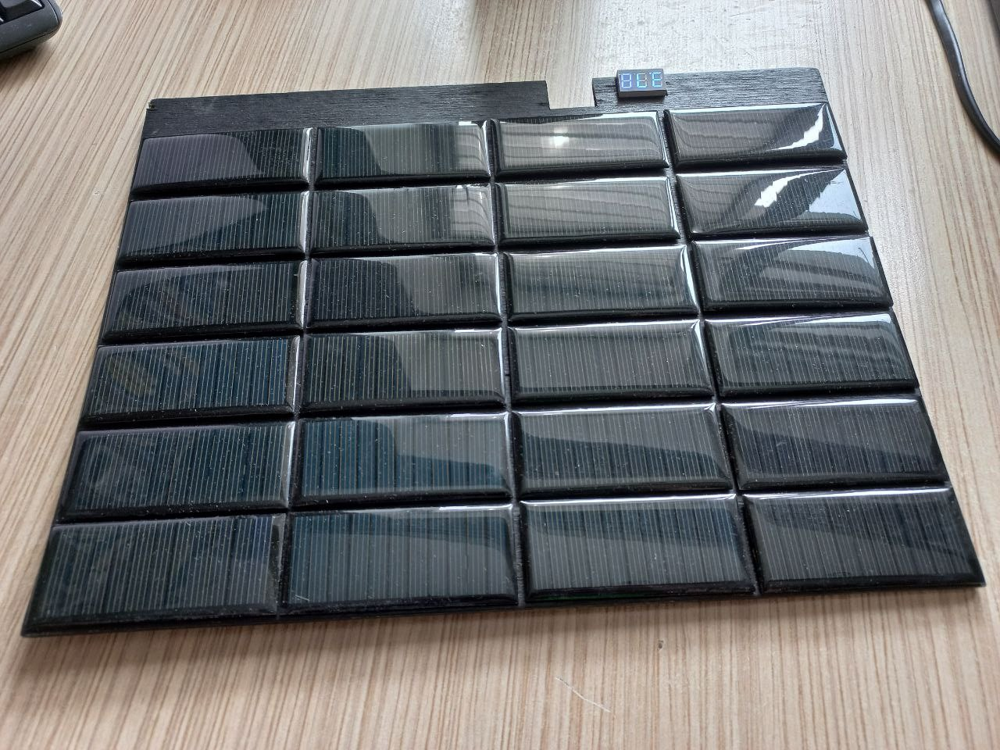
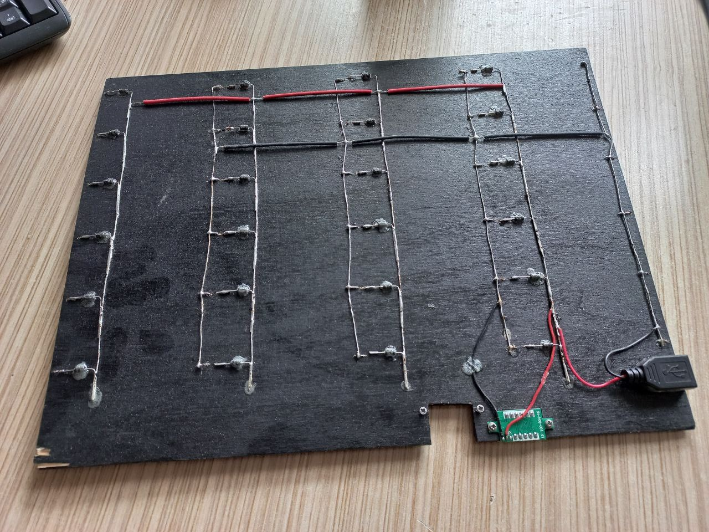
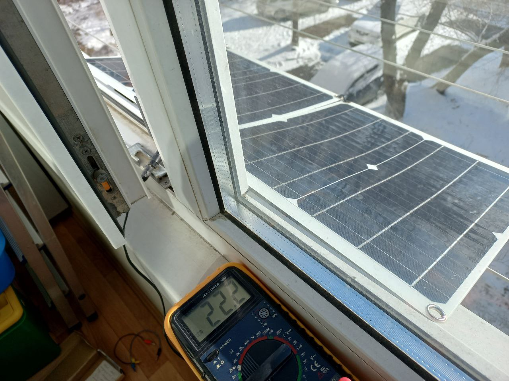
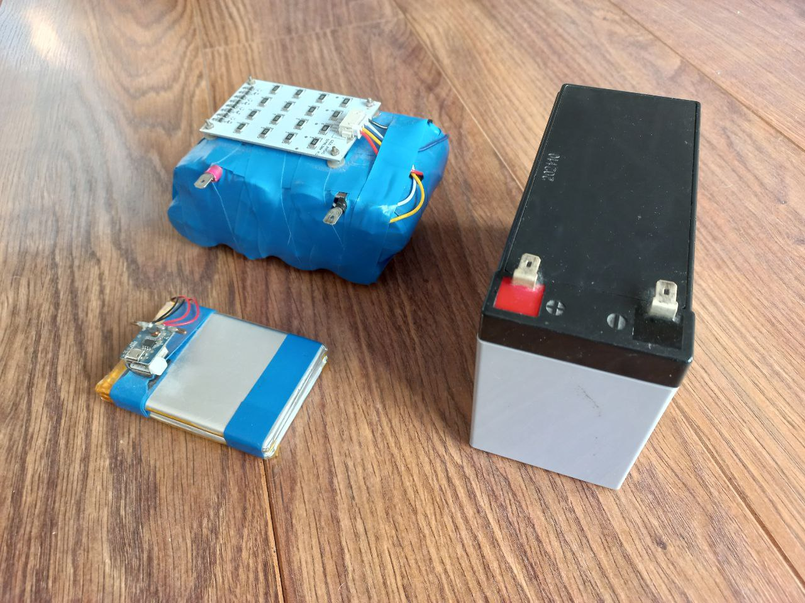
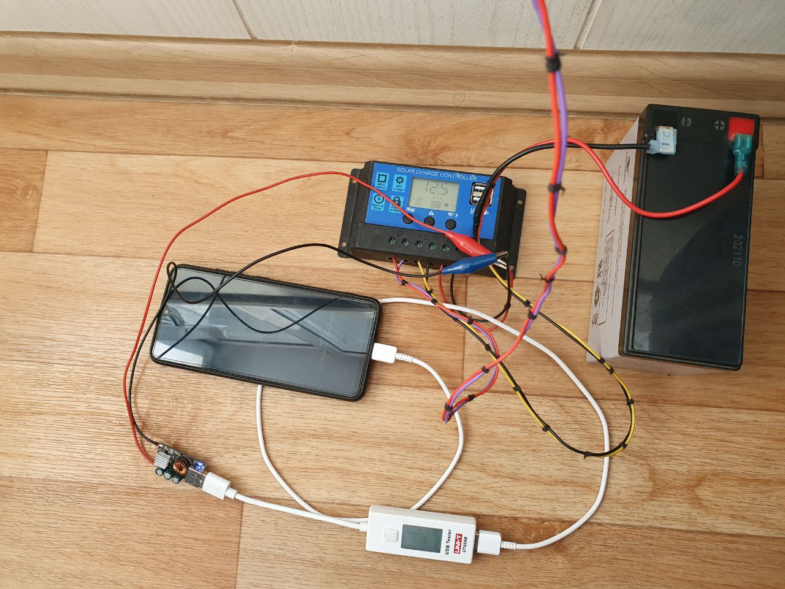
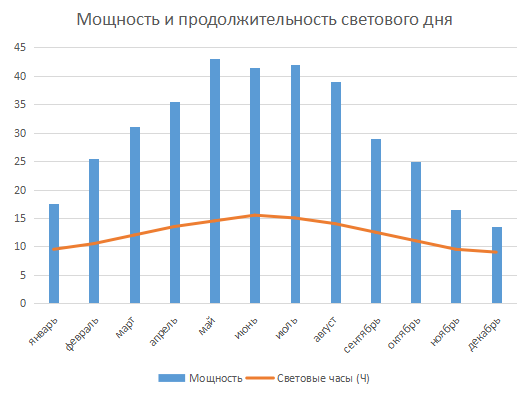
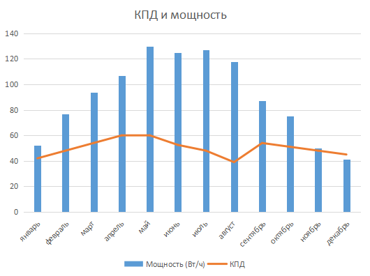
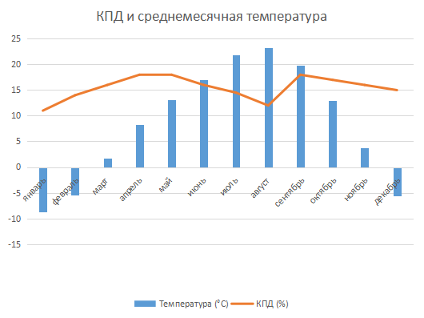
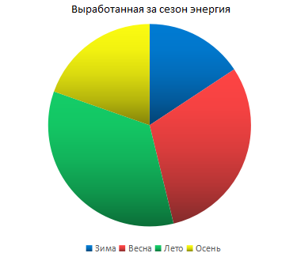

Эксперимент по получению электроэнергии альтернативными методами В рамках проекта мною был проведён эксперимент, в котором я попытался выяснить, смогу ли я целый год заряжать свои мобильные устройства (смартфон, наушники, фонарики, радио и иногда даже ноутбук) от электроэнергии, накопленной исключительно за счёт собранной мной солнечной батареи. Здесь я подробно опишу, как и когда проводился эксперимент, что для этого понадобилось, какие результаты он принёс. Этот эксперимент не был запланирован изначально. Идея о его проведении пришла ко мне во время сборки моей первой солнечной панели. Она состояла из 24 солнечных элементов, закреплённых на доске с просверлёнными для контактов отверстиями. Каждый элемент имел мощность около 300 милливатт и напряжение 5,5 вольт. Все элементы были соединены параллельно, суммарно выдавая около 8 ватт мощности. Однако даже такая панель позволяла зарядить телефон за 4-5 часов, из-за чего я и решил начать эксперимент. Решив увеличить масштаб проводимого эксперимента, я приобрёл 2 солнечную панель. На этот раз, я заказал уже готовую панель, о чём в будущем ни разу не пожалел. По заявленным характеристикам, её мощность составляет порядка 10 ватт, напряжение около 24 вольт, а КПД может доходить до 17-18%, в чём я не до конца уверен, но могу допустить, что это возможно при благоприятных условиях. Итак, при первых же проверках мощности, мне удалось установить, что при солнечной, но не жаркой погоде, и углом падения лучей, близкому к прямому, панель может выдать даже 13-14 ватт. Что, в пересчёте на соотношение вырабатываемой мощности к цене за панель, почти в 2 раза лучше предыдущей. В связи с чем, я заказал вторую панель такого же типа. Сам эксперимент был начат примерно в феврале. 2 солнечные панели, соединённые параллельно и установленные на улице, подключались через зарядное устройство к свинцово-кислотному, или напрямую, к LiFePO4 аккумулятору, с установленной на него платой балансировки и защиты. В течении всего дня аккумуляторы заряжались, за счёт большой ёмкости накапливая всю солнечную энергию, а уже вечером я отключал аккумулятор и заряжал от него все необходимые мне устройства. Я считаю именно такой метод наиболее удобным, так как нет необходимости постоянно менять заряжаемые устройства и контролировать процесс их зарядки, а также позволяет ограничить их от скачков напряжения, вызванных изменением уровня освещённости на улице. Однако при стабильном освещении, например как в ясный день, можно вполне заряжать устройства и напрямую с помощью специальных зарядных плат. Все результаты моего эксперимента я занёс в диаграммы, на которых можно наглядно увидеть все параметры солнечных панелей в зависимости от времени года. В целом же, я считаю, что эксперимент удался, я выполнил свой план целый год заряжать устройства только от солнечной энергии. Такой опыт может даже пригодиться на практике, например при длительном пребывании где-нибудь вдали от города, или же при отсутствии каких-либо других источников энергии.     |